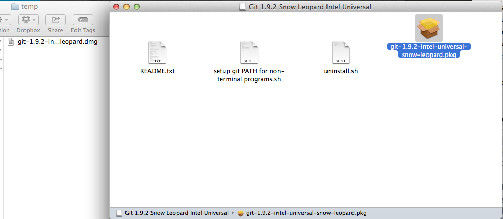
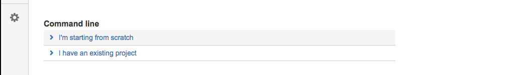
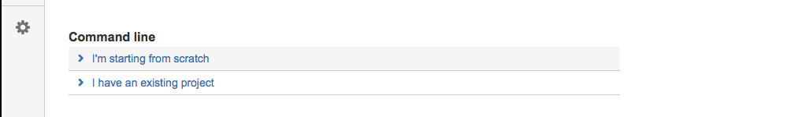

A first lab on the use of Git.
Lab describing how to use git to manage a project by creating a local repository, inserting the project files into the repository and creating and managing a tracking copy of the repository on a cloud-based server.
Introduction
 This short lab is aimed at the single developer who wishes to use Git to maintain a project.
This short lab is aimed at the single developer who wishes to use Git to maintain a project.
Before commencing you are recommended to download and install Sublime Text text editor available here.
git is a source code control application that allows a development team to construct a fine grained history of a project comprising a set of versions, a version being a complete copy of the project made at a specific point in the development cycle. Any particular version is retrievable at any time, a feature that helps not only the development but also the maintenance phases of the project.
Many older version control systems work with a centralized repository of the project code base. Git, however, is a fully distributed system that allows each developer to have one or more full copies of the repository and to thus be able to work offline whenever this might be a requirement.
It takes time to become confident in the use of git. The approach adopted here is to introduce one to a small subset of the application's features that is, nevertheless, sufficient to fully manage a one-developer project.
This briefly is how the system will work.
- You will create an account with BitBucket.
- This will allow you to create a remote repository (repo) there.
- Your project will reside in this repository.
- You may create a clone of the repository on any number of local machines.
- For example, you might have a copy on your laptop and another on your desktop.
- Suppose, for example, you have completed a morning's work on your laptop in college.
- Carry out a process, described below, that will update your remote repo with this, the latest version of your work.
- Suppose that later, for example at home, you wish to work some more on the project using your desktop:
- Simply browse to the folder (directory) where your project is stored on the desktop machine and update the copy of the project on your desktop from the remote repo.
- When you have completed this work session update the remote repo once more.
Note the pattern above:
- Always update the repo with the local copy of your project once you have finished your work session.
- When you commence a new work session you immediately update the local copy of the project with the remote repo BEFORE you make any changes to the local copy. This is important.
- In this way, when you are no longer working on your project, you can be confident that the latest version is always in the remote repo.
Git Bash
 Download and install git.
Download and install git.
- This will be used in this lab. We shall refer to it as Git Bash.
- Important: Work within the Git Bash terminal, not the native Windows terminal, throughout this lab.

All the following commands should be run within the Git Bash terminal, not the standard windows terminal (Command Prompt).
Git(Mac)
 If you are a Mac user you should check if Git is already installed by
If you are a Mac user you should check if Git is already installed by
- Opening a terminal
- Typing git --version
If Git is already on your computer the response should be something like that depicted in Figure 1.
If Git is not installed or if the installed version requires upgrading then you may consider using the graphical Git installer available here.
Save the download file to a temporary folder.

Double click on the saved dmg file.
Launch the installer by double clicking on the package icon (Figure 4). 
Accept the defaults presented in the various screens of the Install Git wizard:

Typically the fresh install will be located in /usr/local/git whereas the Apple version is likely to be located iin /usr/bin/git. In order that the latest version is launched at the git command modify the .bash_profile file by adding /usr/local/git to the path so that it is encountered before /usr/bin/git.
Your .bash_profile should then include something like the following:
PATH=/usr/local/git/bin:$PATH
export PATHCheck by typing which git in a terminal. If the upgrade and path change have been successful then the response should be:
/usr/local/git/bin/git
Finally verify the version is correct by typing git --version (Figure 8).
Configure Git.

Git global configuration
Set identity and email:
// Example
git config --global user.name "Your Name"
git config --global user.email your_name@gitlab.comVery likely the vi editor will be configured by default. However you may set the editor of your choice. An example is shown below. However, we recommend you do not make this choice just now until you have checked the default editor later in the lab.
git config --global core.editor vimNow check the global git settings:
git config --get user.name
git config --get user.emailCheck the git configuration file:
git config --listRepeat all above for Student B.
Optional: Terminal Colors in OSX
Set colors for OSX terminal output by adding the following to .bash_profile:
export CLICOLOR=1
export LSCOLORS=cxFxBxDxCxegedabagacadAn explanation is available here.
The default colour scheme in Git Bash should prove adequate.
Pretty print log output
We shall now introduce an alias to print logs in a short and convenient format. You have a choice of two methods as follows:
Method 1:
Run this command from within the terminal:
git config --global alias.gitpa "log --pretty=format:'%C(yellow)%h %<(24)%C(red)%ad
%<(18)%C(green)%an %C(reset)%s' --date=local --max-count=10"This can be used to generate a log output of the last 10 commits:
git gitpaThe choice of the letters gitpa is arbitrary (abbreviation for git print include author). You may wish to choose a shorter alias such as gl.
Method 2:
Add an alias to your bash_profile or bash_rc file as follows:
alias gitpa="git log --pretty=format:'%C(yellow)%h %<(24)%C(red)%ad %<(18)%C(green)%an %C(reset)%s' --date=local --max-count=10"This method requires less typing to generate a log output:
gitpaas compared to:
git gitpaSome further aliases are presented in the slide decks accompanying the first git lab. These including logs where the authors name is omitted and also the entire log history, not just the last 10 commits.
BitBucket

- Create an account at Atlassian BitBucket.
This account will allow you to create a separate repository (repo) for each project.
 

SSH Keys

This section applies only if you do not have SSH keys on your computer.
Your computer will communicate with BitBucket using Secure Shell (SSH).
It could also use your login-password to authenticate each time you access BitBucket. This, however, would be extremely inefficient.
Here are brief instructions on how to check for the presence of SSH keys on your computer and to generate them if necessary.
Git Bash should have an SSH client. Verify this with the following command:
ssh -vThe response should be similar to this:

Check if you already have SSH keys by checking for the presence of the.ssh folder and if it exists, listing its contents:
ls -l ~/.sshIf keys are present then the response should be something simiar to that shown in Figure 3:

If keys are not present then generate a set with this command:
ssh-keygenAccept the default prompts but add a password when prompted.
- It is essential that you do not forget this password as doing will will likely require that you, at some stage, will be required to generate new keys.
- One some environments it is possible to use keys that are not password protected. However, you will require password-protected keys when your operating system is a Linux variant.
ls -l ~/.sshThe response should be something like that in Figure 3.
SSH Keys - Bitbucket

Instructions on setting up SSH for Git are available here and in particular here.
Following is a summary (it is assumed you have an ssh client installed):
Create a SSH config file
Use a text editor ~/.ssh/config file.
Add an entry to the configuration file using the following format:
The second line is indented. That indentation (a single space) is important, so make sure you include it. The second line is the location of your private key file.
Check your file is here:
~/.ssh/id_rsa
ls -l ~/.ssh/id_rsaWhen you are done editing, your configuration looks similar to the following:
Save and close the file.
Restart the GitBash terminal.
Install the public key on your Bitbucket account
In browser log into your account on Bitbucket.
Choose avatar > Manage Accounts from the menu bar. See Figure 1.
The system displays the Accounts settings page.
Click SSH keys.
The SSH Keys page displays. It shows a list of any existing keys. Then, below that, a dialog for labeling and entering a new key.
In your terminal window, cat the contents of the public key file.
For example:
cat ~/.ssh/id_rsa.pub
Select and copy the key output in the clipboard.
If you have problems with copy and paste, you can open the file directly with Notepad. Select the contents of the file (just avoid selecting the end-of-file character).
Back in your browser, enter a Label for your new key, for example, Default public key.
Paste the copied public key into the SSH Key field.
Click the Add key button: see Figure 2.
Start the ssh-agent and load your keys:
- In the terminal run:
Load the new identity into ssh agent:ps -e | grep ssh-agent
Check keys being managed by agent:ssh-add ~/.ssh/id_rsa
You should be presented with something like this:ssh-add -l2048 4d:b3:2d:ba:2d:6b:c6:3a:24:25:da:22:d1:74:51:e2 /Users/john/.ssh/id_rsa (RSA)
Verify configuration:
ssh -T git@bitbucket.orgIf the key deployment has been successful the response of executing this command should be something like that shown here in Figure 3:
BitBucket

Now that we have registered our SSH key with BitBucket we shall establish a tracking relationship between the local and remote repositories.
You will already have registered an account on BitBucket and created a repository named donation.
If SSH has been properly set up then you will be able to push a local donation project upstream to the remote repo on BitBucket without being required to authenticate with a login and password as would be the case were you to use the HTTP protocol.
In this step we shall
- create an application using the Play framework
- add the application to a local repo
- push the a copy of the local repo to the remote BitBucket repo.
In folder workspaceStudio, create a new Play app called donation.
In the terminal window execute the following sequence of commands:
Change into the donation folder:
cd donationCreate an empty local git repository:
git initMake this the remote repo using a command copied from the Bitbucket site:
git remote add origin git@bitbucket.org:yourBitBucketId/donation.gitBefore adding our project to the repository (repo) we will decide which files to omit. There would be little point in adding files that would auto generated each time the project is compiled, such as temporary files and so on.
- To facilite filtering we use a file called .gitignore (note the file name begins with a period).
- Let's assume, for the moment, that we wish to track all files and folders except the following folders and their contents:
- public
- eclipse
- Here is the .gitignore that enforces this:
- Let's assume, for the moment, that we wish to track all files and folders except the following folders and their contents:
Filename: .gitignore
public
eclipseCreate a .gitignore in the root of donation with this content.
Execute the command git status again and note the difference in output compared to earlier:
- The folder public is no longer tracked
- The newly added .gitignore is now being tracked.
The next step is to update the local repo with the files we would like to track. Here is the command:
git add .Let's see the effect of this command by executing git status. See Figure 3.
A more detailed .gitignore file will be required as one develops a Play app. For this (and other) Play apps, use the following .gitignore file.
Filename .gitignore
# Ignore all dotfiles...
.*
# except for .gitignore
!.gitignore
# Ignore Play! working directory #
war
db
eclipse
lib
log
logs
modules
precompiled
project/project
project/target
crud/*
data/*
conf/crud/*
public/crud/*
target
tmp
test-result
server.pid
*.iml
*.eml
bin
RemoteSystemTempFilesAdd this file to the repo:
git add .Let's prepare the application for Eclipse:
- run the command
play eclipsifyLaunch Eclipse and switch to the workspaceStudio workspace.
- Import donation into workspace ensuring you do not tick the check box Copy projects into workspace.
Switch back to the terminal and run the command:
git add .Check the status:
git statusStudy Figure 5 and notice some additional files present by comparison with Figure 3.
We are now ready to make a first commit to the repo:
git commit -m 'Baseline donation application generated by Play framework'The response is shown in Figure 6.
If you list the files in the current folder (donation) you will see something like that shown in Figure 7. The .git folder contains a local copy of your repository.
- We will now copy this to your remote repository on Bitbucket.
- This action is referred to as a push.
- Run the following command:
The response should correspond to that depicted in Figure 8.git push -u origin --all
If you encounter a problem pushing the project check the addendum at the bottom of this page.
Let's check the logs generated by git. Many options to do so exist, such as the basic git log, but we shall make frequent use of the following:
git log --pretty=onelineSee a typical response in Figure 9.
Now run this command:
git pullThe expected response is shown in Figure 10.

- The remote repo and the local repo are synchronized - they are similar.
- Had the remote repo been a later version then the local repo would have been updated with the the changes.
This situation may be simulated as follows:
Open another terminal window and create a new folder (call it a name of your choice, for example temp)
- Change directory into temp.
- Run the equivalent of the following command
- Obtain the exact command from the Bitbucket site as shown in Figure 11.
yourBitBucketId is your username associated with your BitBucket account.git clone https://yourBitBucketId@bitbucket.org/yourBitBucketId/donation.git
- Obtain the exact command from the Bitbucket site as shown in Figure 11.
This will create an exact copy of the remote repo in the current directory.
Switch back to Eclipse and make changes to the project, for example by adding the following files:
- In Models
- Donation.java
- User.java
- At the project root
- readme.txt
Switch to the original folder and add, commit and push the changes to the remote repo (conventionally known as origin).
- Switch to the second location and run the following command:
- git pull
- This will update your second repo.
- The result is shown in Figure 12.

- The result is shown in Figure 12.
More on logs
Here is a command that generates a time stamp and produces log information on the 10 most recent commits:
git log --pretty=format:'%C(yellow)%h %Cred%ad %Creset%s' --date=local --max-count=10Typing this last command repeatedly is impractical. Adding it as an alias in an appropriate script solves this problem. For example in the case of the Mac, the following could be added to the .bash_profile file:
alias gitp="git log --pretty=format:'%C(yellow)%h %Cred%ad %Creset%s' --date=local --max-count=10"On Windows you could add it to the .bashrc file (creating the file if necessary) in the user root folder or paste the command into a terminal, execute it once and thereafter use DOSKEY to reintroduce the command into the terminal window.
Notice the terminating expression --max-count=10
- This prints the information relating to the most recent 10 commits.
- Change the number 10 if you wish
- Alternatively omit the expression and all log information relating to all commits will be printed.
alias gitpp="git log --pretty=format:'%C(yellow)%h %Cred%ad %Creset%s' --date=local"
- To output log details of the last commits, therefore, execute gitp on the command line.
- To output log details of all commits to date execute gitpp, pressing space bar to scroll to each successive page and pressing Q to quit.
Addendum: Configure your repository to use the SSH protocol
Ignore this addendum if you have already successfully pushed the project to BitBucket.
This addendum applies where confusion may arise regarding which protocol to use to push the project to BitBucket: SSH or HTTPS.
Open the git config file. Assuming you are in Windows and using the notepad editor, this is the command to run from within the project folder (donation):
notepad .git/configEnsure that the url value is set to use SSH rather than, possibly, the default HTTPS. For example:
[remote "origin"]
fetch = +refs/heads/*:refs/remotes/origin/*
url = git@bitbucket.org:yourBitBucktetId/donation.gitSave and close the edited config file.
It should now be possible to push the project to BitBucket without the requirement to authenticate with logon-password each time a push is executed.
Tags
 Tags may be used to denote specific points in the project's history.
Tags may be used to denote specific points in the project's history.
See here for detailed information.
To list all existing tags:
git tagTo list all tags and associated messages:
git tag -nTo add a tag to the project in the local repo:
git tag -a tagName -m 'message re tag'Tags must be explicitly pushed to the remote repo (if required):
git push --tagsAdd a tag to previous arbitrary commit:
- You could, for example, examine commit history with command
git log --pretty=onelineand select specific previous commit that you wish to tag.
and then add required tag:
git tag -a v0 ecc9475f554 -m "Message here"To delete a tag:
git tag -d tagNameTo delete a tag from remote repo:
git tag -d tagName
git push origin :refs/tags/tagName
List remote tags:
git ls-remoteTo push all including a commit to remote:
git push && git push --tagsTo obtain the hash code of the commit associated with a particular tag:
git show-ref --tags -d
Procedure

Here we describe a simple procedure to minimise the likelihood of problems arising when using git.
The procedure assumes that between work sessions your remote repo and all local repos are up-to-date, that is, all the local repos are exact replicas of the remote repo.
It also assumes that you have, at least,
- added, committed and pushed a baseline version of your project to the remote repo.
Steps to take
- When you commence a work session:
- Run git status
- The output should correspond to that shown in Figure 1.
- Carry out your work on your project.
- Add the changes:
git add .
- Run git status
- Commit the changes:
git commit -m 'include your commit description here'- Push the changed repo to Bitbucket:
git push
- Push the changed repo to Bitbucket:
Repeat this cycle for each work session.
Key points
- Check the status as the last operation of your worksession:
git statusAlways ensure that at the both the beginning and end of your work session the output from this last command is as shown in Figure 1.
- That is, your working directory is clean.
When you resume your work on whichever workstation, check the status again.
- If your working directory is clean then you are ready to proceed.
- If not, then somewhere in your work you have not adhered to the procedure described on this page.
- If your working directory is clean run this command before you begin work:
- If your working directory is clean then you are ready to proceed.
git pull- If the remote repo is ahead of the local repo, this last command will update the local repo.
- If the local and remote repos are similar the the output will be Already up-to-date.
Summary:
- When not working on the project:
- The local directories of all your local repos are clean.
- For example on your laptop and desktop computers.
- The remote repo contains the most up-to-date version of the project.
- The local directories of all your local repos are clean.
- When you resume work:
- Verify your local directory is clean by running a status check and
- Then pull from remote repo.
- At the end of your work session:
- add, commit and push to the local repo.
- verify local directory clean by running a status check.
Help!
Assume you're in serious trouble, you've failed to follow procedure, and you are unable to recover.
Disaster recovery method 1
- In Windows Explorer, Finder or the like, delete the contents of your local repo, for example donation.
- Do not delete from within a terminal window as there is a risk you might delete the .git folder.
- Still using Explorer or the like, copy the contents of your emergency back-up file (example, expanded donation.zip) into the repo folder (donation).
- In terminal, in the donation folder run the commands:
Your repo now contains the emergency back up archive.git add . git commit -m 'your comment here'
Disaster recovery method 2
Roll back to an earlier commit
- Checkout the commit you wish to revert to
- Copy the working tree to a
recovery folder
- Do not copy .git folder
- git checkout master
- Delete contents working tree
- Do not delete .git folder
- Copy backup to working folder (working tree)
- Add all, commit and push.
Warning
If you checkout an earlier commit then your repo will be in a state referred to as Detached Head.
- You may think you can proceed to make changes, commit and push in the ususal manner while in this state. You may not.
- If you wish to roll back your work to an earlier commit and discard all subsequent commits you should, for now, use one of the disaster recovery methods described above.
- Alternatively, you may create a new branch at this HEAD and continue to make changes and commit in the usual manner. You later have the option of merging this branch into the master branch, for example.
Supplement: Branching
Consider an application Donation which has tags story-01 to story-07 inclusive on the master branch.
You wish to make some changes to the code at story-04 branch.
Checkout story-04:
git checkout story-04Create and checkout a new branch at this location:
git checkout -b story-04We have given the branch the same name as the tag for convenience.
Make the necessary changes.
Add and commit the changes:
git add .or
git add --allon earlier versions of git.
Commit:
git commit -m 'add your message here'Push this new branch to the remote repo:
git push origin story-04Delete tag story-04, local and remote:
git tag -d story-04
git git push origin :refs/tags/story-04Recreate tag local and remote:
git tag -a story-04 -m 'your message here'
git push --tagsThis useful command prints tags and their associated hash codes:
alias gitag="git log --no-walk --tags --pretty=format:' %C(yellow)%h %Cgreen%d %Cred%ad %Creset%s' --date=local"